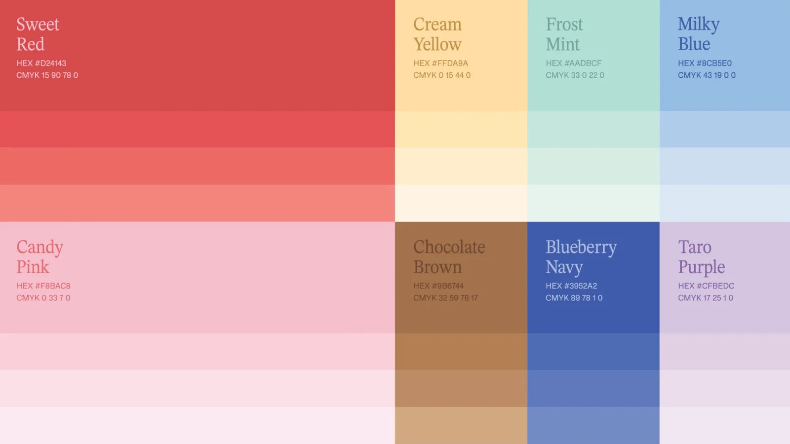
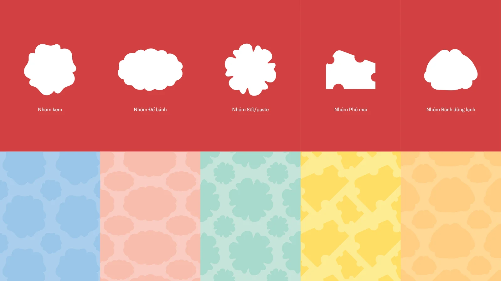
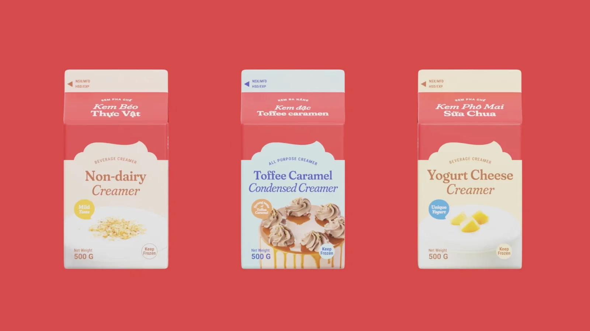
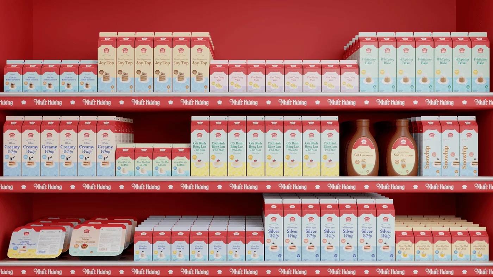
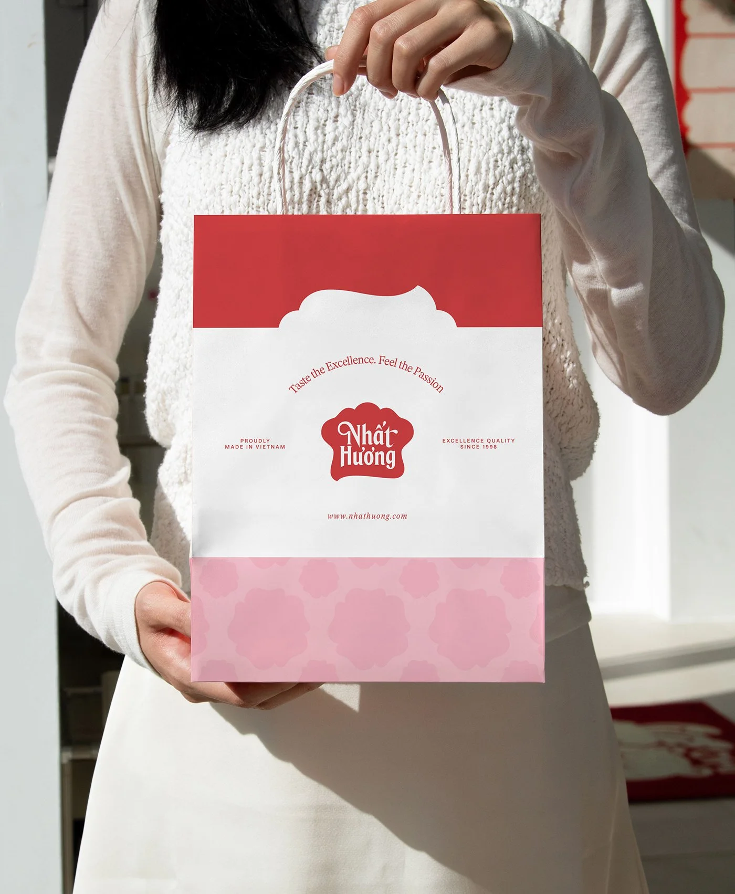

Nhat Huong — refreshing a 25-year-old brand without replacing it
Nhat Huong is a Vietnamese baking brand, established 1998, that grew from products into an ecosystem — production, baker education, and distribution. By its own account it broke foreign brands' dominance of the domestic market. I worked as part of the brand team on its visual identity refresh.
CLIENTNhat Huong · est. 1998
ROLEDesigner · brand team
TIMELINE6 months · [ADD: year]
TOOLSPhotoshop · Illustrator
What the team deliveredLogo refresh, an eight-family color system, a graphic/pattern system keyed to product groups, and packaging across the full range — cartons, tubs, sauces, labels.
My part[ADD: which boards are yours — e.g. "the packaging system and pattern library; logo refresh led by X; photography by Y"] Interviewers will ask exactly this, so the page should answer it first.
Status & outcome[ADD: shipped? in production since when, across how many SKUs? client sign-off?]
HOW TO READ THIS PAGE — artifacts carry disclosure labels: MEASURED real, checkable data · RETROSPECTIVE made after the project to document reasoning · PROPOSED a goal or plan, never an achieved result.
THE SYSTEM AT A GLANCECHECKABLE NUMBERS ONLY
1998
THE LEGACY BEING REFRESHED
8
COLOR FAMILIES, WITH TINT RAMPS
5
PRODUCT-GROUP SHAPES → PATTERNS
CONTEXT
Twenty-five years of product excellence, very little brand building — that was the gap. The refresh had one hard rule: the chef's-hat mark and the red were staying. Everything else had to be earned back from that constraint.
BRAND STRATEGY
The team positioned the refreshed brand as an Inspirer — a company whose story is empowering bakers, not just selling to them. The manifesto board leads with national pride (Tự hào Thương hiệu Việt Nam — proudly a Vietnamese brand) because that pride is the brand's actual history, not a campaign line.
RETROSPECTIVE The positioning space, reconstructed — the archetypes available to a 25-year-old category leader, and what each would have cost:
Archetype
The story it tells
Why it doesn't fit
Heritage Keeper — "since 1998, unchanged"
Tradition, nostalgia
Points backward — useless for the education arm and international ambitions
Modern Challenger — full reinvention
New brand, new market
Throws away the hat and the red — the two assets the client (rightly) refused to spend
Inspirer — chosen
"We empower bakers" — pride pointed forward
The only story that uses the legacy as fuel: production feeds education feeds the community it claims to inspire
[ADD: the alternatives the team actually debated, if records exist — that converts this reconstruction into documented history]
ManifestoNational pride as positioning — the one claim a 1998-vintage domestic pioneer can make that imported brands can't.
LOGO REFRESH
The hat mark stays; its proportions and typography were rebuilt. The characters now connect without collisions, and the brim's curve was redrawn so the wordmark follows it naturally at any size.
[ADD: the before/after pair — this section shows a refresh without showing what was refreshed. Even a small side-by-side of old vs. new mark converts every claim here from assertion to evidence]
Identity boardThe refreshed mark in its system — lockups, seals, and the palette it anchors.
COLOR & TYPE
The heritage red stays at the center, joined by a vibrant pink as the primary pair. Around them, eight named families with tint ramps — enough range to give every product line its own shelf identity without leaving the system:
Sweet Red & Candy Pink — the primary pair; heritage red, warmed up
Cream Yellow, Frost Mint, Milky Blue — the dairy-soft supporting range
Type: a sturdy serif for heritage headlines, a clean sans for everything read at arm's length — [ADD: name the typefaces, or note if custom]

Color systemHex and CMYK per family — the CMYK column is the tell that this system was built for print and packaging first.
GRAPHIC SYSTEM
Five piped, organic silhouettes — one per product group (cream, cake base, sauce, cheese, frozen) — each of which unfolds into a repeat pattern. The shape is the wayfinding: you can identify the product group from across a supermarket aisle before you can read a word.

Shapes → patternsOne silhouette per product group, one pattern per shelf.
PACKAGING
Product lines are organized by color, pattern, and graphic element. With a range this diverse — whips, creamers, sauces, frozen dough — the structure is what keeps a full shelf reading as one brand:
Line-upEach line keeps its own accent and pattern; the hat seal and layout grid hold them together.Label systemBilingual labels, seals, and barcodes for the full range — the unglamorous half of packaging work, shown because it's most of the work.

Creamer trioSame grid, three accents — the system flexing without breaking.

Shelf renderThe whole range merchandised together — a visualization, not a photo of a live shelf. [ADD: a real in-store photo if the system shipped]
APPLICATIONS
Rollout concepts for the places the brand lives beyond the shelf — bags, fleet, cards, out-of-home, and the social feed:

ToteThe bag runs the system's three-band logic: red, mark, pattern.Fleet livery conceptMockup — shown as a concept, not a deployed vehicle.
CollateralCards in the system's red and pink.Out-of-homePhotography-led, with the pattern system framing rather than dominating.SocialThe feed alternates photography with system tiles so the grid reads as a brand, not a catalog.
THE SYSTEM, COUNTED
RETROSPECTIVE Component inventory, tallied from the boards on this page — the checkable shape of the delivery:
Identity: refreshed mark + wordmark, 2 seal variants (Proudly Made in Vietnam · quality/est. seal), 3 lockup treatments (pink, red, black)